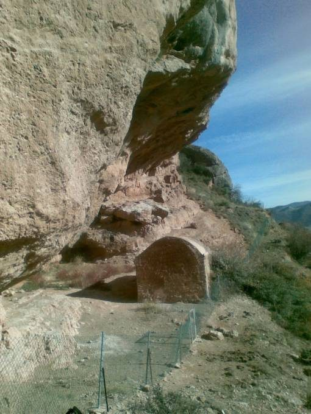
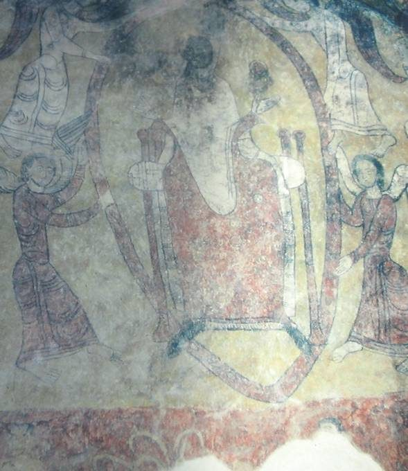

Ermita de San Esteban
Castañares de las Cuevas · comarca del Iregua
- Distancia0,5 km
- Desnivel100 m
- Tiempo orientativo30 min
- Dificultadbaja
- Época recomendadatodo el año
- Terrenosenda
Esta ermita tiene múltiples encantos: su ubicación, su tamaño, su estructura, los frescos de sus paredes. E imagino que como en todas las ermitas, su historia. Sería curioso poseer una máquina del tiempo y poder retroceder en ella para saber qué personas y por qué motivo decidieron construir en un determinado lugar una ermita. Sin duda un lugar hermoso para ver amanecer.., si no hubiese que madrugar tanto.


Recorrido
Partimos desde la venta La Paula, a pie de carretera, entre el túnel de Islallana y el cruce de Viguera. Allí seremos siempre bien recibidos, nos proporcionarán interesante información y la llave para poder visitar el interior de la ermita. El recorrido presenta pocas dudas; unas marcas de pintura verde nos guiarán. Pero es, como dicen en mi pueblo: ‘to tieso’, así que es aconsejable llevar botas o zapatillas de montaña.
El resto es sencillo: ir tomando altura por una ladera abancalada llena de olivos hasta llegar a nuestro objetivo, que haciendo honor a su curiosa ubicación se nos desvela inesperadamente.


{kind=link}
{kind=link}